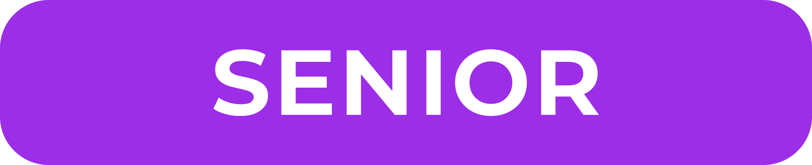

В этой части мы познакомимся с основами математики, которые нам будут необходимы для погружения в статистику и анализ данных.
В принципе, для изучения разделов и других частей достаточно школьного курса математики — если вы в нём преуспели, можете пропустить эту часть. При столкновении с неизвестными математическими концепциями вы сможете скакнуть в нужный раздел этой части по оставленным ссылкам.
Если же со школьной математикой не задалось, то поглядите разделы этой части, чтобы воскресить и укрепить руины школьного матемтаического знания.
Если вы преисполнены решительности заглянуть в разделы  и  других частей, то рекомендую полистать эту часть полностью и изучить то, с чем вы не знакомы.
других частей, то рекомендую полистать эту часть полностью и изучить то, с чем вы не знакомы.
Почему стоит изучать математику?
Математику уже затем учить надо, что она ум в порядок приводит
М. В. Ломоносов1
Цитата, которая может быть известна вам ещё со школы, звучащая настолько пафосно, что может даже отталкивать в современное время — с чего бы мне вдруг «ум в порядок приводить»? он у меня и так в норме! Зайдём с других сторон.
Во-первых, потому что это красиво (Иллюстрация 1 и Иллюстрация 2).
Во-вторых, потому что в математике происходит дикий экшон (Иллюстрация 3).
Ну, а в-третьих, почему-то так складывается, что математика крайне удачно подходит3 в качестве инструмента для описания наблюдаемых явлений, в том числе того, что мы наблюдаем в наших исследованиях — и научных, и индустриальных. К тому же, статистика, на которой стоят все методы анализа данных, является разделом математики, так что ситуация весьма понятная — придется погрузиться в этот дивный мир.
Безусловно, есть еще много причин — на математике работаю все цифровые устройства и современные алгоритмы, окружающие нас повсюду, являясь формальной наукой, она знакомит нас с логическими рассуждениями и доказательствами, позволяет изучать мир за пределами нашего перцептивного опыта4 и т. д. Частично мы попробуем прикоснуться к ним в рамках данной книги.
Размышления о «математической тревожности»
Для впечатлившихся: от команды Алана есть ещё аналогичный видос про физику. Там не всё полностью корректно, но с учетом художественных допущений произведение крайне достойное! Про геометрию также есть.↩︎
На тему описания мира через математику хорошо повествует А. М. Семихатов. См. «Математика и интуиция», «Абстрактное и конкретное в математике» и другие лекции.↩︎
На тему открытий и предсказаний силами математики безумно интересно рассказывает всё тот же А. М. Семихатов. Есть два варианта примерно одной и той же лекции: для всех и для программистов.↩︎